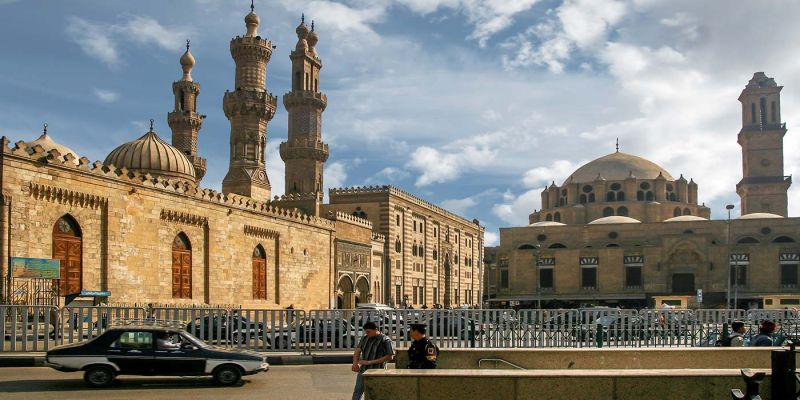
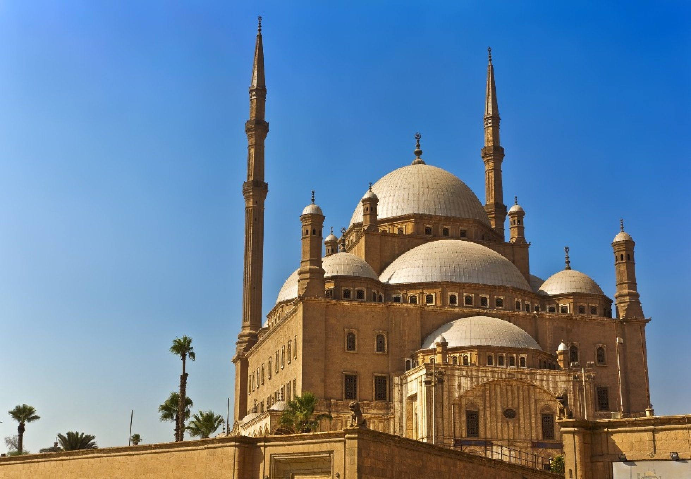

The Great Sphinx of Giza
{kind=link}
{kind=link}
Great Sphinx of Giza, colossal limestone statue of a recumbent sphinx located in Giza, Egypt, that likely dates from the reign of King Khafre (c. 2575–c. 2465 BCE) and depicts his face. It is one of Egypt’s most famous landmarks and is arguably the best-known example of sphinx art. It is among the world’s largest sculptures, measuring some 240 feet (73 metres) long and 66 feet (20 metres) high. It features a lion’s body and a human head adorned with a royal headdress. The statue was carved from a single piece of limestone, and pigment residue suggests that the entire Great Sphinx was painted. According to some estimates, it would have taken about three years for 100 workers, using stone hammers and copper chisels, to finish the statue.
The best way to get to the location of The Great Sphinx of Giza is to book a flight in Manila Airport to Cairo. This costs roughly around PHP 25,000 - PHP 55,000 with a travel time of 14 hours and 20 minutes. After arriving at Cairo, you take a cab ride to Great Sphinx of Giza. costing roughly around PHP 200 - 240. This would take around an estimate of 32 minutes with a distace of 34.2km From there you have arrived at your destination.
Islamic Cairo
 {kind=link}
{kind=link}
The atmospheric, narrow lanes of the capital's Islamic Cairo district are crammed full of mosques, madrassas (Islamic schools of learning), and monuments dating from the Fatimid through to the Mameluke eras. This is where you'll find the labyrinth shopping souk of Khan el-Khalili, where coppersmiths and artisans still have their tiny workshops, and stalls are laden with ceramics, textiles, spice, and perfume. Surrounding the market is a muddle of roads, home to some of the most beautiful preserved architecture of the old Islamic empires. There is a wealth of history here to explore. Visit Al-Azhar Mosque and the dazzling Sultan Hassan Mosque, and make sure you climb to the roof of the ancient medieval gate of Bab Zuweila for the best minaret-speckled panoramas across the district.